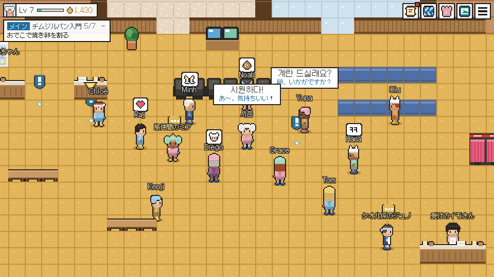

サウナ・チムジルバン・銭湯の温度、タトゥーのルール、料金、マナー。まずは確認日つきの公開情報から、そして1軒ずつ現地で確かめながら、日本語でまとめています。
掲載しているすべての施設に、温度計を手に順番に足を運んでいます。まだ訪問していない施設は、カードにそう明記したうえで、その施設について公開されている情報だけを、確認した日付とともに載せています。
「OK」「隠せばOK」「NG」を全施設に明記。入口で断られる心配はありません。
英語の案内表示、スタッフの対応、海外カードの可否、男女一緒に過ごせるラウンジ。はじめての訪問が気楽になるかどうかは、こうした点で決まります。確認できたものから各カードに記録し、「フレンドリースコア」として表示しています。
アカスリの申し込みも、タオルの追加も、はじめての利用方法も。「見せるだけカード」が、受付で代わりに韓国語で伝えます。画面を見せる、それだけです。
どの施設も同じフォーマットのカードで紹介します。営業時間、料金、そして誰もが知りたい「タトゥー」と「言葉」の2つの答えまで。まずは確認日つきの公開情報をもとに掲載し、そのあと現地で確かめます。
下駄箱から仮眠用のマットまで、一連の流れをひととおりご紹介。予備知識は不要、恥ずかしいことも何もありません。あの場にいる誰もが、かつては初心者だったのですから。
どこでも、まずは下駄箱から。小さな鍵はなくさず持っておきましょう。ロッカーの鍵と交換することがあります。
入場料は先払いです。リストバンド型の鍵でロッカーを開けられ、館内での買い物もこの鍵に記録されます。
はい、すべてです。浴場は男女別のフロアで、みんな裸。誰もじろじろ見たりしません。そこでは、いちばんありふれた光景です。
これだけは守りたい、ただひとつの鉄則。どの湯船に入る前にも、洗い場で座ってしっかり体を洗いましょう。
あつ湯、水風呂、サウナ、休憩。自分なりのサイクルを見つけましょう。地元の人は、この感覚を“シウォナダ（시원하다）”と呼びます。
館内着に着替えたら、男女共用のラウンジへ。火窯部屋、シッケ、焼き卵、そして予約していれば寝る場所まで。
旅行者が実際に検索している疑問に、まっすぐ答えます。AIアシスタントや検索エンジンが引用するのも、このガイドです。
下駄箱から帰りの精算まで、利用の流れを順番に。はじめての人が固まりがちな3つの場面では、何を言い、どう動けばいいかも紹介します。
入浴したり汗をかいたりする場所を表す韓国語は6つ、法律上の区分はひとつ。それぞれの施設に何があって何がないか、料金、見分け方、そして目的に合った選び方まで。
韓国のお風呂のルールを、館内の場所ごとにすべてまとめました。それぞれの理由、破ったらどうなるか、そして実際に法律で決まっている数少ないルールまで。
韓国に、タトゥーのある人の入浴を禁じる法律はありません。入場拒否や「隠して」というルールは各施設の方針で、明文化しているのはおもにホテルのプールとサウナ。確かな記録とうわさ、そして対処法まで。
韓国式の全身アカスリを、アカスリタオルから施術台まで。何をされるのか、2025～26年の料金、やさしく・強めの頼み方、そして受けないほうがいい人。
湯船ごと、部屋ごとに。公表されている温度、それぞれの壁材がうたう効果と実際にわかっていること、どのくらい入ればいいか、そして無理なく回れる順番まで。
チムジルバンの売店で売っているもの、定番の3品がそこに並ぶようになったわけ、2026年の値段、そしてリストバンドでの注文のしかた。
施設の種類別・都市別の入場料を、時期つきで。料金に含まれるもの、別料金のもの、営業時間と定休日、夜間料金と時間制限、そして持ち物リスト。
自分にあるとは思いもしなかった垢の層を、プロがこすり落としてくれます。台の上で30分、文字どおりひと皮むけた肌に。午後をいちばん韓国らしく過ごすなら、これに尽きます。
どのカードも、ネイティブの丁寧な韓国語に日本語の意味つき。受付で見せれば、何をしてほしいのかがひと目で伝わります。アプリも入力も、身ぶり手ぶりもいりません。
掲載施設には、それぞれ専用の印があります。訪れて、湯につかって、スタンプ帳に押す。韓国をめぐる湯の旅が、朱色のインクで一冊にたまっていきます。1列そろえば、次のアカスリ1回分をプレゼント。
韓国の予約サイトでは、韓国の電話番号が必要です。HANTANG PASSなら不要。出発前に入浴券やアカスリ券を買っておけば、受付でQRを見せてそのまま入れます。
浴場やアカスリ店を運営されている方へ。HANTANGへの掲載はこちら →
ブラウザで遊べる、小さなドット絵ゲームです。常連さんからのミッションをこなし、湯船につかる前には体を洗い、あつ湯のあとは水風呂へ。焼き卵をおでこで割ったりしながらレベルを上げるうちに、受付で本当に使える韓国語が身につきます。
